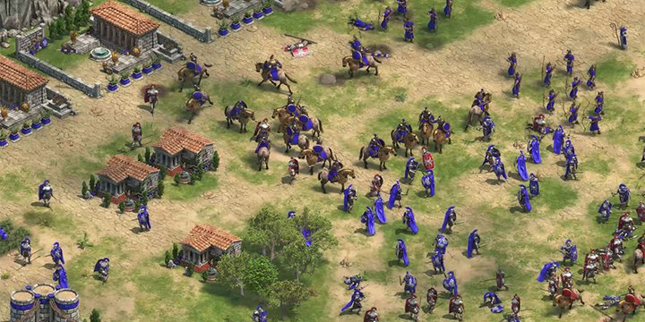
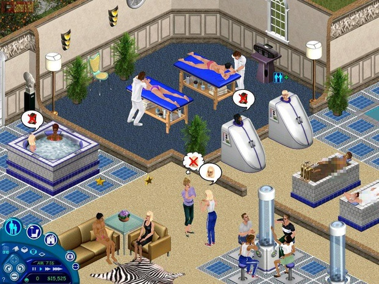

Age of Empires es un videojuego de estrategia en tiempo real para computadoras personales,
el primero de la serie homónima fue lanzado el 26 de octubre de 1997 y escenificado en una línea
del tiempo de 3000 años, desde la temprana Edad de Piedra hasta la Edad de Hierro.
El jugador tiene opción de elegir entre varias civilizaciones.
Se pueden ver varios tipos de civilizaciones las cuales dependiendo de su elección le
favorecerán ciertas estrategias, por la simple razón que cada una tiene bonificaciones particulares en el juego.

En cada entrega de esta saga, el juego se ambienta en una determinada época, a continuación se lista los tres juegos y su era.
Los Sims es un videojuego de simulación social y estrategia creado por el diseñador de videojuegos Will Wright,
desarrollado por Maxis y publicado por Electronic Arts en el año 2000. Desde entonces la franquicia ha vendido más
de 100 millones de copias (contando las dos primeras generaciones), siendo el videojuego de PC más vendido de la historia.

Desde 1991, Will Wright había conseguido resultados similares con el popular juego SimCity y todas sus secuelas.
El éxito de sus videojuegos se basa en su filosofía creativa de aplicar
Wiki de Los Sims en español